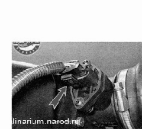
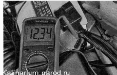
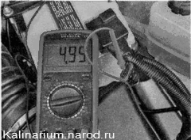
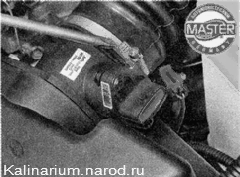
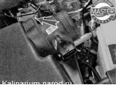
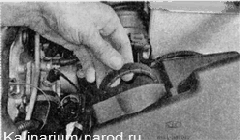

Датчик массового расхода воздуха проверка и заменаДля выполнения работы потребуется мультиметр (в режиме вольтметра). Проверка и снятие 1. Подготавливаем автомобиль к выполнению работы . 2. Нажимаем на фиксатор колодки и отсоединяем колодку жгута проводов отдатчика массового расхода воздуха. 
3. Подсоединяем «минусовой» щуп вольтметра к «массе» (к двигателю).
4. Включив зажигание, вольтметром измеряем напряжение питания на выводе 2 колодки жгута проводов (нумерация выводов выполнена на датчике).  Напряжение на выводе должно быть не меньше 12 В. Если напряжение не поступает на колодку или оно меньше 12 В, значит, разряжена аккумуляторная батарея, неисправна цепь питания или неисправен ЭБУ. 5. Вольтметром измеряем напряжение питания на выводе 4 колодки жгута проводов.  6. Крестовой отверткой ослабляем хомут и отсоединяем воздухоподводящий шланг от датчика.
 7. Торцовым ключом на 10 мм отворачиваем два болта крепления датчика массового расхода воздуха.  8. Снимаем датчик и извлекаем уплотнительное кольцо. Совет Убедиться в неисправности датчика массового расхода воздуха можно, заменив его заведомо исправным. Установка Устанавливаем датчик в последовательности, обратной снятию. |